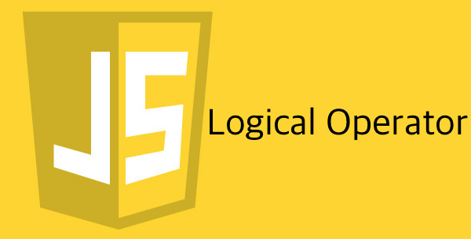

오늘은 기본값을 위해 많이 쓰던 논리 연산자인
||와 &&을 집중 탐구해보았다.
우선 위에 있는 녀석들은 어떨 때 쓰는지 알아보자.
사용 사례
네임 스페이스 패턴(~ES5)
웹팩을 사용하면 js 파일을 모듈 단위로 사용할 수 있지만,
그럴 환경이 안 되면 아래와 같은 우회 방법을 통해서 전역 스코프를 최대한 덜 더럽힐 수 있다.
ES6에는 모듈 import, export 기능이 있어서 ~ES5라고 써놓긴 했지만…
아직 지원하는 브라우저가 없는 걸로 안다. (17년 2월 기준)1234567891011// 전역 스코프에는 namespace와 namespace2 모듈만이 존재한다.// func라는 충돌나기 쉬운 네이밍이 전역에 존재하지 않으므로 충돌이 일어나지 않는다.// 즉 네이밍을 고민할 염려가 조금은 줄어들게 된다. 뭐 그 외에 장점도 많지만...// script src 태그를 통해 미리 namespace 모듈을 불러온 경우에는 전역에는 변수 namespace가 존재한다.// || 연산자를 써서 전역에 namespace라는 변수(모듈)가 존재하면 그 모듈을 변수에 할당하고,// 존재하지 않는다면 빈 객체를 변수에 할당하는 패턴이다.const namespace = namespace || {};namespace.func = function() {};const namespace2 = namespace2 || {};namespace2.func = function() {};함수의 매개변수 기본값 설정(~ES5)
ES6를 통해서는 아래와 같은 게 가능하지만,1const func = (param1 = 0, param2 = '') => {};
바벨을 사용할 수 없고, IE 하위 브라우저까지 크로스 브라우징을 하는 환경에서는
아래와 같이 처리해줘야한다.
함수의 인자로 기본값 설정
위에서는 함수를 선언할 때 매개변수의 기본값을 설정한 경우지만
이 경우는 함수를 호출할 때 인자의 기본값을 설정한 경우이다.
둘의 차이는 뭐 없다고 봐도 무방하지 않을까…싶다.12345const obj = {name: ''};const func = age => console.log(age);// obj 객체에 age라는 키가 없으므로 undefined를 반환한다.// undefined는 형변환 했을 때 false로 간주되므로 기본값인 1이 넘어간다.func(obj.age || 1); // 1함수의 기본 반환값 설정
함수의 반환값이 매개 변수에 따라서 오류를 뿜는 경우가 존재한다.
그런 오류를 방지하고자 기본값을 설정하곤 하는데 어떤 경우인지 보자.123456const cntOccurrences = (regExp, str) => (// 정규표현식과 매치되는 결과가 없어서 null을 반환할 경우// null.length는 오류를 반환하므로 기본값으로 빈 배열을 넣어줘서 오류를 방지함.(str.match(regExp) || []).length);console.log(cntOccurrences(/\d/g, 'asdf')); // 0, 기본값이 없었다면 오류가 난다.거짓 기본값 설정하기
말이 이상한데…
만약 해당 변수가 거짓이라면 더 이상의 판별을 하지 않고자 할 때 쓰면 된다.12345678910111213141516const arr = [1, 2, 'q', 4];// 배열이 숫자로만 이루어진 건지 아닌지 판별하는 함수const isNumArr = arr => {let isNum = true; // 모든 값이 숫자인지 아닌지 판별하는 flag 변수arr.forEach(v => {// 만약에 한 번이라도 숫자가 아닌 값이 있었다면// 그 아래에 있는 구문들을 실행할 필요가 없으므로// return으로 함수를 조기 종료.if(!isNum) return;// 현재 값이 숫자인지 판단하여 변수에 저장.isNum = isNaN(v);});return isNum;}console.log(isNumArr(arr)); // false
위와 같은 코드가 있을 때 && 논리 연산자를 쓰면 코드를 줄일 수 있다.
퍼포먼스 측면에서는 맞는지 잘 모르겠다…
원리 파악
x || y => x가 참이면 무조건 참.
즉 x가 참이면 y는 평가(실행)하지도 않음.
x && y => x가 거짓이면 무조건 거짓.
즉 x가 거짓이면 y는 평가(실행)하지도 않음.
이렇게 좌변에 어떤 값을 넣는가에 따라서 연산 속도에 영향을 미침.
검증
이 말이 사실인가 한 번 아래 예제를 실행해보자.
논리 연산자는 좌변에 따라서 우변이 실행되느냐 마느냐가 달려있다.
그럼 반환은 어떻게 하는지 살펴보자.
왜 위와 같은 값을 반환하게 됐는지 한번 원리와 연관 지어서 생각해보자.
- x || y
|| 연산자는 좌변이 true이면 우변을 평가, 실행하지 않는다고 했다.
즉, 좌변이 true이면 우변은 없는 놈 취급하기 때문에 바로 x가 반환(평가, 실행)되는 것이다.
하지만 좌변이 false이면 우변을 평가, 실행하게 된다.
이렇게 되면 좌변은 아예 없는 놈 취급하게 된다.
즉, 좌변이 false이면 우변의 값은 뭐든간에 상관 없이 항상 우변이 반환(평가와 실행은 말할 것도 없이)된다. - x && y
&& 연산자는 좌변이 false이면 우변을 평가, 실행하지 않는다고 했다.
즉, 좌변이 false이면 우변은 없는 놈 취급하기 때문에 바로 x가 반환(평가, 실행)되는 것이다.
하지만 좌변이 true이면 우변을 평가, 실행하게 된다.
이렇게 되면 좌변은 아예 없는 놈 취급하게 된다.
즉, 좌변이 true이면 우변의 값은 뭐든간에 상관 없이 항상 우변이 반환(평가와 실행은 말할 것도 없이)된다.
쓸 데 없는 실험
|
|